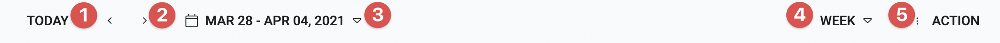
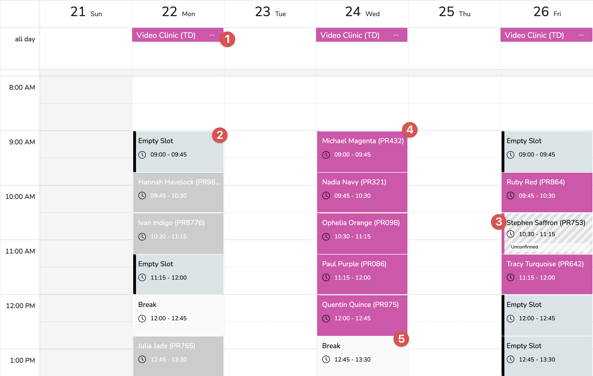

Overview
The diary enables the user to view, edit, delete and confirm appointments. There are various views for the appointments including day, week, month and agenda.
There is also the ability to print each clinic sheet.
Page
This is the area is to support the viewing, editing and deleting of appointments and the viewing of clinic days
It contains three main sections
- The toolbar for the navigation of the schedular.
- The Filter decide which clinicians appointments/clinics are showing.
- The schedular for viewing and interaction of the appointments.
Toolbar
This area has the navigation tools for the schedular and an actions button.
| Number | Label | Description |
|---|---|---|
| 1 | Today | This will jump the view to toadys date. |
| 2 | Nav Buttons | This will step date range forward and back depending on the selected view. |
| 3 | Date Range | This show the visible date range and if clicked will show a calendar to enable the navigation to a particular date. |
| 4 | View | This show the current view and enables you to change it. The available options are: Day, Week, Month, and agenda. |
| 5 | Action | This is a drop down menu for selecting associated actions (See below) |
Actions
The available actions are:
| Icon | Label | Description |
|---|---|---|
| Create Clinic Sheet | [Only available in Day View] When a clinic day is selected you can print out the run sheet for the clinic. | |
| Add Appointment | Open a dialog to create a new appointment. |
The Filter
The filter selection sets which clinicians appointments are showing.
The Schedular
Each clinic day is shown by the clinic name appearing in the all day section of the schedular. (See 1)
below that is the various slots of each clinic. The slot types are:
| Number | Type | Description |
|---|---|---|
| 2 | Empty Slot | This is an empty slot in the clinic where an appointment can be placed. |
| 3 | Unconfirmed Appointment | Show an appoinment that has not been confirmed. |
| 4 | Confirmed Appointment | Show a confirmed appoinment. |
| 5 | Break | Show a designated break in the clinic. (Non-bookable) |
You can interact with slots 1 - 4 by clicking on them. When you click on an empty slot then an add Appointment dialog will appear. When you click on an appoinment then the appointment overview dialog will appear and finally when you click on a clinic a menu will appear offering you the option to jump to the clinic day editor.
Walkthrough
How to..
Add an Appointment
There are a few methods of adding a new appointment:
- Via the client wizard (See Client Add Wizard). This is completely dealt with on the Add Wizard page and is not covered here.
- Via the schedular (See Diary)
- Via the client diary (See Client Diary)
- Click on the
 Add button in client diary or in the
main
diary either click on an appointment labelled
'Empty
Slot' or select Add Appointment from the action menu on
the
toolbar.
Add button in client diary or in the
main
diary either click on an appointment labelled
'Empty
Slot' or select Add Appointment from the action menu on
the
toolbar. - A dialog will open. If the appointment was selected by using the client diary then the client details will be filled in and if from the 'Empty Slot' then fill in clinic information.
- [Required] The first field is 'client' and is selectable from a drop down list. The list will be filtered if the dialog was selected from the 'Empty Slot' by using the clinic venue. It is important to note that the client has a default venue and clinician set up and these will automatically fill in the next 2 fields.
- [Required] This next field is the venue and defines where the appointment will take place.
- [Required] Then is the Clinician field and this defines which the clinician the client will see.
- [Required] The Case field will automatically fill in if the client has only one case, otherwise you can select from the drop down list.
- [Required] The Appointment Type is selectable from a drop down list. The appointment type defines many features of the appointment. (See Appointment Type). When you select this it will define some information in the appointment. (Such as what happens when the appointment is attended). It will also set the appointment duration and the charges assigned to the appointment.
- Duration (min) sets the length of the appointment. So automatically setting the end time.
- Confirmed sets whether the client has confirmed that they will attend.
- Date sets the appointment dates by clicking the required available clinic date (see above)
- The Time dropdown enables the selection of the time slot. The time slots are set by the durations and the available time. They also give freedom to overlap with breaks or day end. If you don't want to use the defined slots then untick Snap To to change the slots to be 5 minutes apart, it will still prevent the use of already taken space but gives more freedom. The information panel shows you the selected appointment and whether or not it overlaps with a break or the end of a day.
- The final area Charges are for adding charges to the appointment. It will be automatically be updated from the appointment type, however you can add additional charges.
- Click
 Save to save appointment or
Save to save appointment or  Cancel to exit without saving.
Cancel to exit without saving.
Edit an Appointment
There are a few methods to edit an appointment:
- Via the schedular (See Diary)
- Via the client diary (See Client Diary)
- In the clients diary click on the ellipses at the end of the relevant entry and click the edit button or in the main diary either click on an active appointment and then from the appointment view click the 'pen'. For the fields description see above.
View an Appointment
- Click on an appointment in the diary view to view appointment details.
Actions Toolbar 1
| Icon | Label | Description |
|---|---|---|
| Confirm/ Un-confirm appointment | You can confirm or un-confirm an appointment by clicking here | |
| Delete | Delete the appointment. | |
| Edit | Edit the appointment. | |
| Close | Close the dialog |
Header 2
The title of the appointment.
Information
| Number | Icon | Description |
|---|---|---|
| 3 | The date and time of the appointment. | |
| 4 | The appointment Venue | |
| 5 | Attendees - It shows the practitioner and client. The client has an arrow next to jump to the client's details. | |
| 6 | The confirmed status of the appointment: Unconfirmed Confirmed |